Frames from the current main branch after the overnight refactor: three switchable cloud styles on the procedural sky, a path-traced ground truth to judge them against, the early raymarch looks you wanted kept, the showcase scenes on three r187, and the first upscaler render levels.
Mostly not. Your pathtracer rendered the Parkouring cloud from the same density, sun, sky, camera and tone map as our realtime renderer. Left in each sheet: path traced, 4096 samples. Middle: our Nubis lighting. Right: our octave lighting.
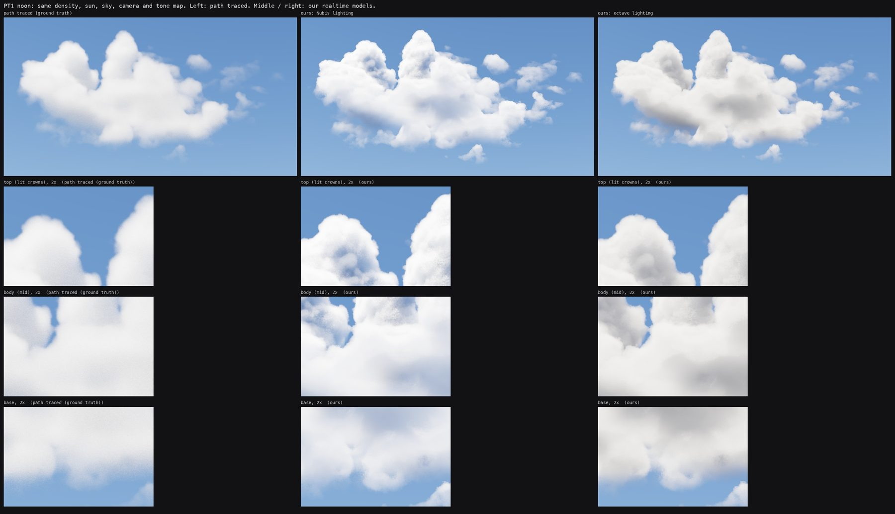
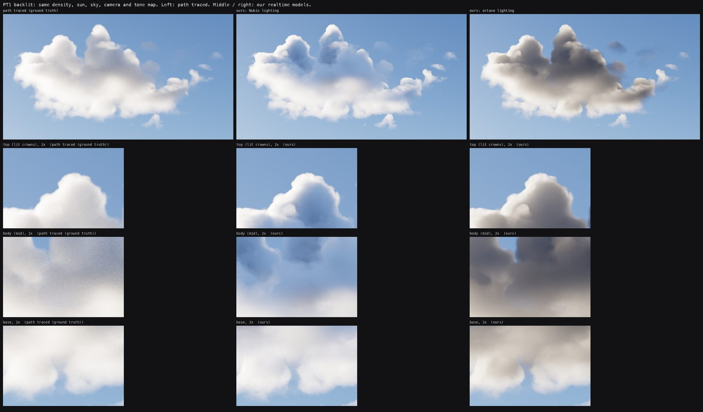
Lit faces carry 1.6–1.9× too much small-scale texture (4–20 m pits). That is the foam you kept seeing. A finer bake adds no detail, so it is the lighting, not resolution.
In the reference, thin fringes are see-through and faintly blue. Ours are painted solid white, and the reference shows no dark powder rim at these angles.
Nubis shade is too blue (blue/red 2.2 against 1.3–1.8); octave is too brown. Most of the blue in the bench's bases comes from the atmosphere's aerial perspective.
The September raymarch you liked is closer to the reference than the current bench: soft, heavy, cohesive. Your eye was right about its weight.
Your d1 answer: both, case by case. Style is now a switch on the HZD bench: Horizon (unchanged), Early (the September treatment) and Real weight (your photos, nudged toward the path-traced reference). Same map, sun and camera in every frame.
?style=horizon?style=early?style=realMidday and ground: both new styles read as masses rather than foam, and Real weight is closest to the reference. Sunset: Early draws a cut-paper outline around every body, and Horizon is the most natural. From above (not shown), both new styles flatten into a white sheet. So it really is case by case.
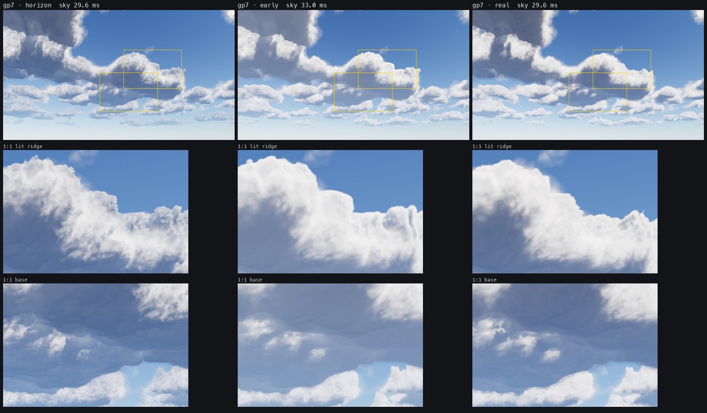
The September prototypes still run, untouched, as the legacy pages. They are linked from the lab index and now capturable by the harness. The Early style ports their treatment to the procedural sky; these pages stay as the originals.
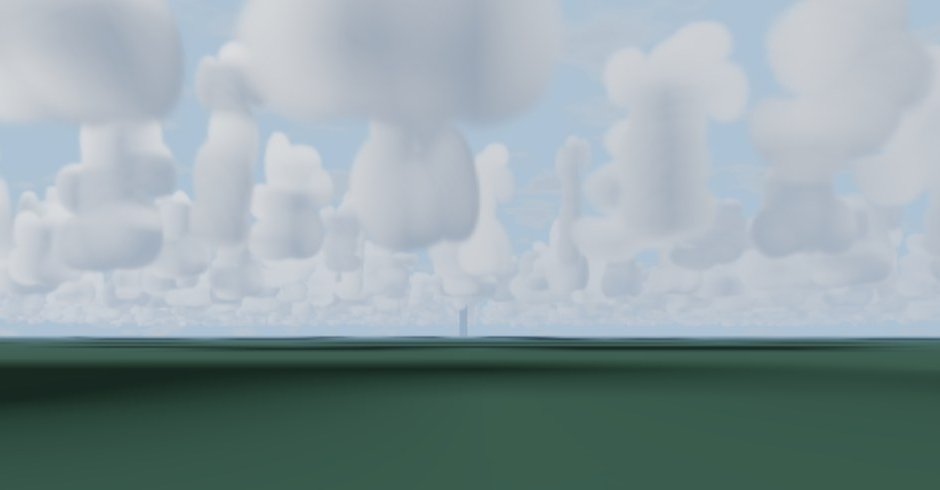
legacy/cloudscape/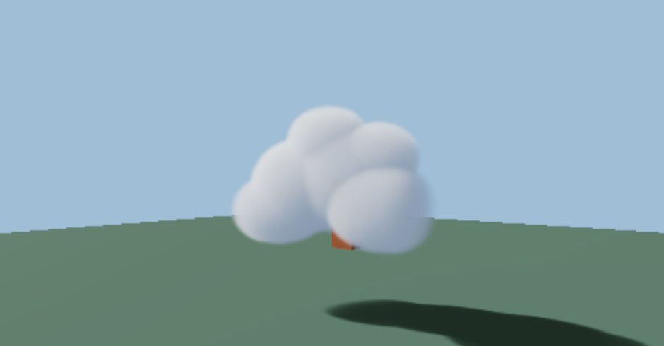
legacy/clouds/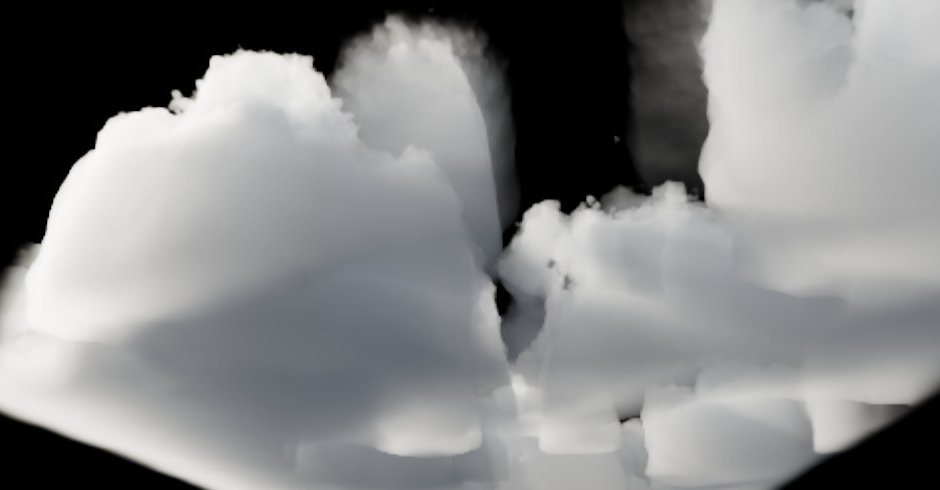
legacy/realism/The demo scenes after the move to three 0.187 (with a local patch for r187's compile bug, which otherwise renders these pages black). Captured with the UI hidden.
open-water/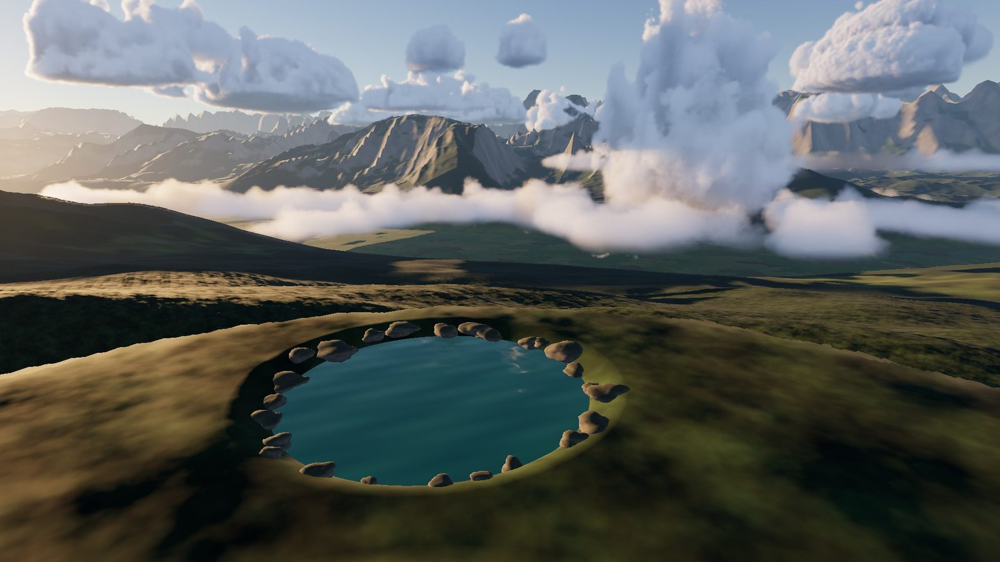
onsen/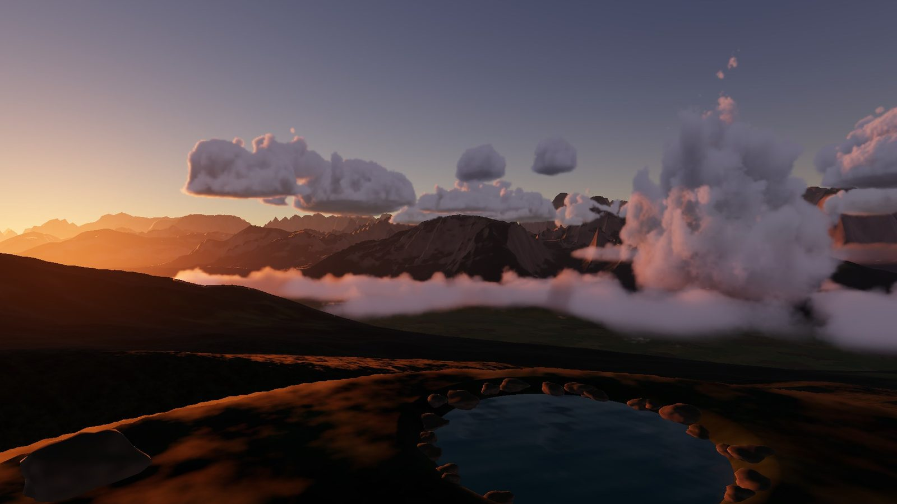
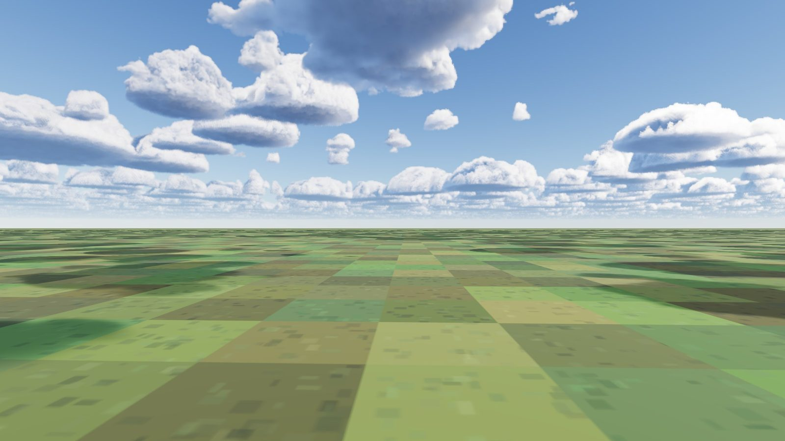
plains-flight/flagship/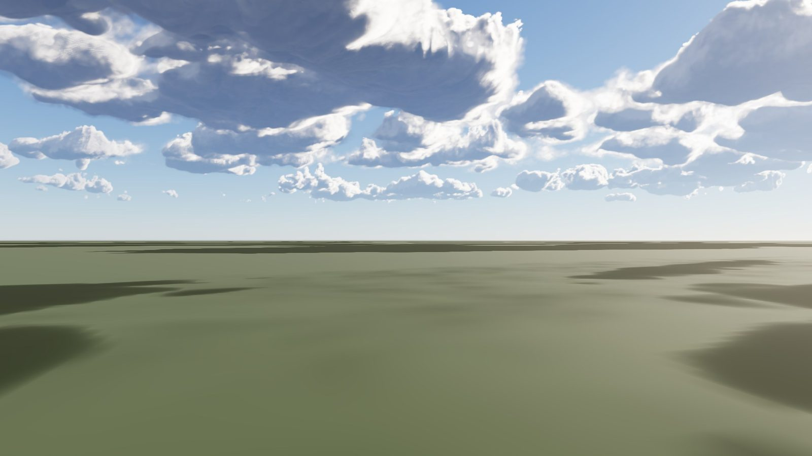
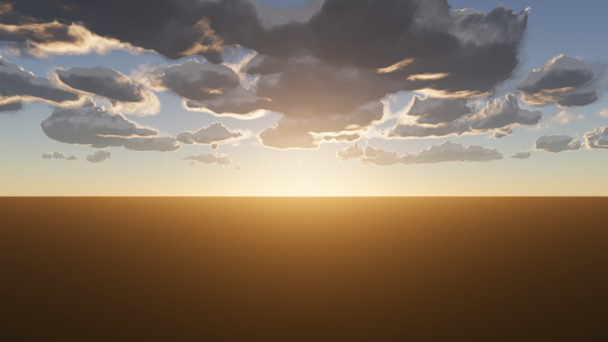
EmberGen and Disney VDB clouds loaded through @pmndrs/vdb, resampled on the GPU into our runtime, and lit by the same sun, sky and haze as the procedural clouds around them. They cast and receive the sky's shadows, and show in the water. Loading Disney's cloud takes about 1.3 s of work, where our old importer took 48 s.
vdb-sky/WebVDB's own froxel renderer was tried as well: about 10× slower here, flat and over-bright, with no depth or sky shadows, so our runtime is the path for clouds. The gaps to close upstream (resample tool, multi-channel grids, majorants, worker parsing) are in work/reports/V1-vdb-sky.md.
Your d4 answer: upscaler always on, and looks judged at Desktop too. The sky layer now renders at an internal size and goes through your upscaler's raw-WebGPU core, with cloud depth and wind-aware velocity. Cinematic stays the default and is the old path.
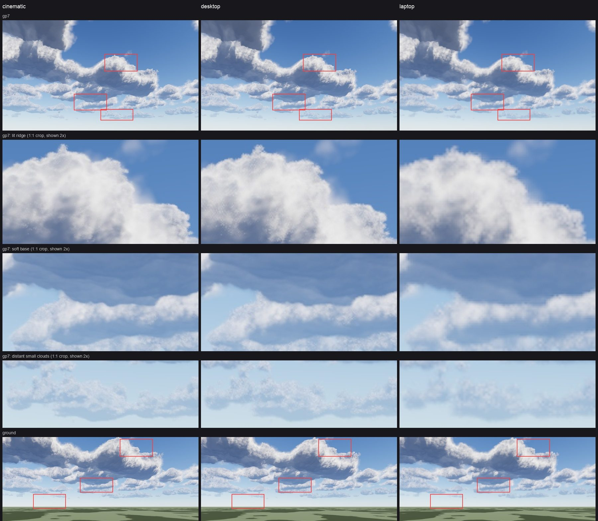
| Level | Sky layer res | Sky cost vs Cinematic | Target (d8) | State |
|---|---|---|---|---|
| Cinematic | 1× | 1.0 | no cap | default |
| Desktop | ½ | ≈ 0.55 | ≤ 4 ms | softer, faint hatch; S2 fixing |
| Laptop | ¼ (⅓ tested) | ≈ 0.2 (0.3) | ≤ 3 ms | too soft at ¼; ⅓ looks better |
No level is near the ms targets yet: the sky trace itself is the cost, so the speed phase (amortisation, 30 Hz lighting, LOD) is still needed. All timings tonight are ratios from a heavily loaded machine; the WebGPU device was also lost in about half of the Desktop runs, which looks like memory pressure. Please try ?level=desktop on a quiet machine.
| Work | Aim | State |
|---|---|---|
| S2 | Remove the fine hatch on hard lit faces, and make Desktop hold up beside Cinematic (render the sky layer under the upscaler's jitter). | running |
| V1 | Artist VDB clouds through @pmndrs/vdb, inside our sky. Page vdb-sky/. | landed |
From the repo: pnpm dev, then open http://localhost:5180/. The lab index links all of these. On the HZD bench, T opens every setting and the sidebar has the Style and Review switches.
| Page | Address | Try |
|---|---|---|
| HZD bench, styles | /hzd/?view=gp7&style=real | style=horizon|early|real; views ground, gp7, sunset, above |
| HZD bench, levels | /hzd/?view=gp7&level=desktop | level=cinematic|desktop|laptop, or Review switch U2 |
| Path-traced reference | /reference-pt/ | noon, low and backlit buttons; settles over a few minutes |
| Early raymarch | /legacy/cloudscape/ | Play 40-second flight; also /legacy/clouds/ |
| Artist VDB in the sky | /vdb-sky/ | near, far, sunset, above; asset and route switches; drop any .vdb or .nvdb |
| Open water | /open-water/ | shore, horizon, sunset, cruise, flight |
| Onsen valley | /onsen/ | vantage, valley, sunset |
| Plains flight | /plains-flight/ | t0 to t40 bookmarks |
| Flagship | /flagship/?cloud=parkouring | ground, backlit, inside |